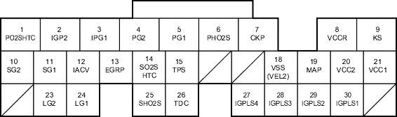

Fuel and Emissions Systems
|
11-175 |
ECM/PCM Inputs and Outputs at Connector A (31P)

Wire side of female terminals
NOTE: Standard battery voltage is 12 V.
Terminal number |
Wire colour |
Terminal name |
Description |
Signal |
1*1 |
BLK/WHT |
PO2SHTC (PRIMARY HEATED OXYGEN SENSOR (PRIMARY HO2S) HEATER CONTROL) |
Drives primary HO2S heater |
With ignition switch ON (II): battery voltage With fully warmed up engine running: duty controlled |
2 |
YEL/BLK |
IGP2 (POWER SOURCE) |
Power source for the ECM/PCM circuit |
With the ignition switch ON (II): battery voltage With the ignition switch OFF: about 0 V |
3 |
YEL/BLK |
IGP1 (POWER SOURCE) |
Power source for the ECM/PCM circuit |
With the ignition switch ON (II): battery voltage With the ignition switch OFF: about 0 V |
4 |
BLK |
PG2 (POWER GROUND) |
Ground for the ECM/PCM circuit |
Less than 1.0 V at all times |
5 |
BLK |
PG1 (POWER GROUND) |
Ground for the ECM/PCM circuit |
Less than 1.0 V at all times |
6*1 |
WHT |
PHO2S (PRIMARY HEATED OXYGEN SENSOR (PRIMARY HO2S), SENSOR 1) |
Detects primary HO2S sensor (sensor 1) signal |
With throttle fully opened from idle with fully warmed up engine: about 0.6 V With throttle quickly closed: below 0.4 V |
7 |
BLU |
CKP (CRANKSHAFT POSITION (CKP) SENSOR) |
Detects CKP sensor signal |
With engine running: pulses |
8 |
YEL |
VCCR (SENSOR VOLTAGE RETURN) |
Detects sensor voltage |
With ignition switch ON (II): about 5 V With the ignition switch OFF: about 0 V |
9*8 |
RED/BLU |
KS (KNOCK SENSOR) |
Detects knock sensor signal |
With engine knocking: pulses With ignition switch ON (II): about 5 V |
10 |
GRN/YEL |
SG2 (SENSOR GROUND) |
Sensor ground |
Less than 1.0 V at all times |
11 |
GRN/WHT |
SG1 (SENSOR GROUND) |
Sensor ground |
Less than 1.0 V at all times |
12 |
BLK/RED |
IACV (IDLE AIR CONTROL (IAC) VALVE) |
Drives IAC valve |
With engine running: duty controlled With ignition switch ON (II): about 5 V |
13*3 |
WHT/BLK |
EGRP (EXHAUST GAS RECIRCULATION (EGR) VALVE POSITION SENSOR) |
Detects EGR valve position sensor signal |
With engine running: 1.2 V-2.0 V (depending on EGR valve lift) |
*1: with TWC model (except KV model)
*2: without TWC model
*3: D15Y4, D17A2 (KU, KQ, KZ, FO models) engines
*4: with cruise control
*5: D15Y4, D17A2 (KU model) engines
*6: D15Y4, D16W8, D16W9, D17A2, D17A5, D17Z3, D17Z4 engines
*7: D16W8, D16W9 engines
*8: except D15Y2, D15Y3, D15Y5, D15Y6 engines
*9: D15Y6 engine
*10: D15Y4, D17A2 (KU, KQ, KZ, FO models), D17Z1 (KQ model) engines
*11:KU model
*12 except KU model
*13: D15Y6, D15Y3 (KY model with immobiliser, KN model), D15Y5, D15Y4, D17Z1 (KQ, KZ models), D17A1 (KK model), D17A2 (except MA model), D17A5 (KY model with immobiliser, KN model) engines
*14: except D15Y3 (PA, KW, KT, KN models), D16W9 (PA model), D17A5 (KN model) engines
*15: A/T and M/T
*16: CVT
*17: A/T and CVT
*18: A/T
*19:except D15Y6, D15Y3 (KY model with immobiliser, KN model), D15Y5, D15Y4, D17Z1 (KQ, KZ models), D17A1 (KK model), D17A2 (except MA model), D17A5 (KY model with immobiliser, KN model) engine